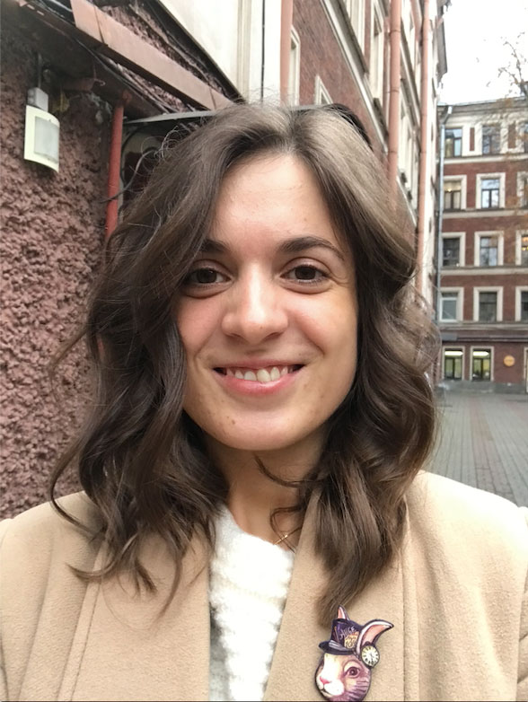

Иван Грачев
Очень самобытный и необычный проект.
Мария Рачинская
Мне особенно понравилось решение лестничных клеток.

Светлана
Очень нравится, что в городе развиваются такие проекты. Надеюсь, такие проекты скоро будут не только в частных домах, но и в кафе, музеях, театрах. Я бы сходила!
Иван Грачев
Очень самобытный и необычный проект.
Мария Рачинская
Мне особенно понравилось решение лестничных клеток. Кружки вообще очень стильные!